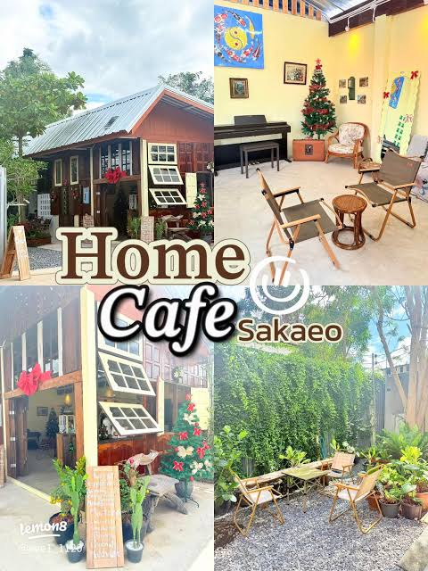
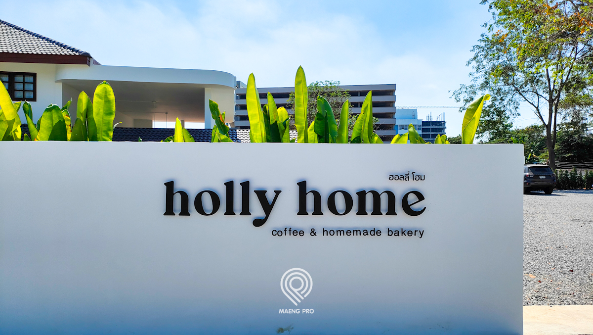
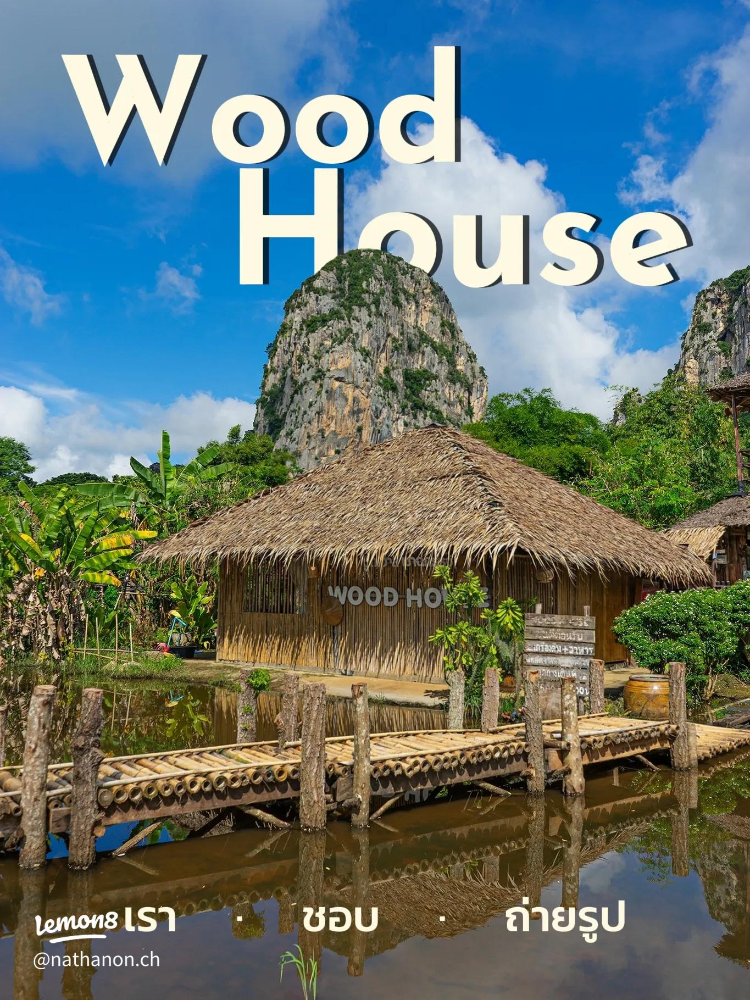

Home Cafe Sakaeo
☕ คาเฟ่ / เครื่องดื่มคาเฟ่บรรยากาศอบอุ่น เหมาะสำหรับนั่งพักผ่อน ดื่มกาแฟ และใช้เวลาสบาย ๆ กับเพื่อนหรือครอบครัว
รวมคาเฟ่และร้านกาแฟที่น่าสนใจในจังหวัดสระแก้ว

คาเฟ่บรรยากาศอบอุ่น เหมาะสำหรับนั่งพักผ่อน ดื่มกาแฟ และใช้เวลาสบาย ๆ กับเพื่อนหรือครอบครัว

คาเฟ่สไตล์มินิมอล บรรยากาศสบาย ๆ เหมาะสำหรับพักผ่อน นั่งเล่น และถ่ายรูป

คาเฟ่บรรยากาศดีในเขาฉกรรจ์ เหมาะสำหรับนั่งพักผ่อน ดื่มเครื่องดื่ม และถ่ายรูป

คาเฟ่และร้านอาหารสไตล์โมเดิร์น มีทั้งกาแฟ เครื่องดื่ม ขนม และอาหาร